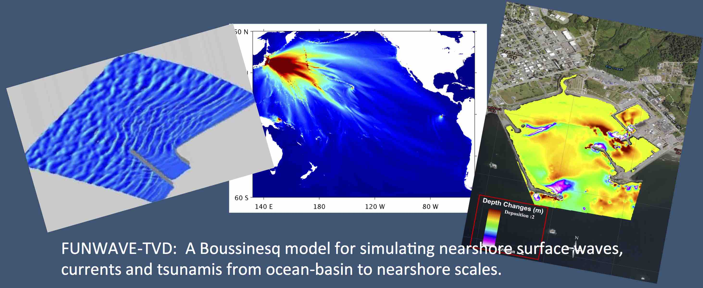

FUNWAVE-TVD¶
What is FUNWAVE-TVD?¶
FUNWAVE–TVD is the Total Variation Diminishing (TVD) version of the fully nonlinear Boussinesq wave model (FUNWAVE) developed by Shi et al. (2012). The FUNWAVE model was initially developed by Kirby et al. (1998) based on Wei et al. (1995). The development of the present version was motivated by recent needs for modeling of surfzone–scale optical properties in a Boussinesq model framework, and modeling of Tsunami waves in both a global/coastal scale for prediction of coastal inundation and a basin scale for wave propagation.
This version features several theoretical and numerical improvements, including:
{kind=link}
A more complete set of fully nonlinear Boussinesq equations;
Monotonic Upwind Scheme for Conservation Laws (MUSCL)–TVD solver with adaptive Runge–Kutta time stepping;
Shock–capturing wave breaking scheme;
Wetting–drying moving boundary condition with incorporation of Harten-Lax-van Leer (HLL) construction method into the scheme;
Lagrangian tracking;
Option for parallel computation.
The most recent developments include ship-wake generation (Shi et al., 2018), meteo-tsunami generation (Woodruff et al., 2018), and sediment transport and morphological changes (Tehranirad et al., 2016, Malej et al., 2019).
Where to start¶
This comprehensive Wiki provides general introductions to all model components and theory behind the numerical formulations in FUNWAVE-TVD. Simple examples and tutorials are presented for beginners, as well as download and installation instructions to begin using FUNWAVE–TVD locally. The detailed model equations and numerical schemes can be found in Shi et al. (2012).
If you are new to FUNWAVE, we recommend first reviewing the coastal processes the model is capable of resolving (below), and the physics of how these processes are solved in the model. The theory behind each module can be found on the Basics page. Next, download and setup instructions can be found on the Model Download and Setup page, where we list the prerequisites needed to begin running FUNWAVE locally and describe how to build your “Makefile”. In addition, take the time to review the input parameters for each module on the Definitions of Parameters page. To begin running simple cases, review the example scenarios listed on the Examples page. If you run into any issues with model setup and execution, submit your questions to the FUNWAVE community by subscribing to the mailing group.
Interested in attending a FUNWAVE workshop or learning from previous workshop materials? Visit the FUNWAVE-TVD Workshop page to learn more.
For quick keyword searches, use the search bar to the left.
Subscribe¶
Stay connected to the global FUNWAVE community by subscribing to the mailing group. Submit general or specific questions to new and experienced users alike to solve problems and enhance solutions.
| Subscribe to FUNWAVE-TVD mailing group |
| Visit this group |
Stay up-to-date on the latest video tutorials and examples on YouTube by subscribing to FUNWAVE Tutorials and Fengyan Shi.
Capabilities¶
As a nearshore shallow-to-intermediate water phase-resolving Boussinesq-type numerical wave model, FUNWAVE can resolve many coastal processes such as:
Nearshore wave propagation & transformation
Refraction, diffraction, reflection & nonlinear shoaling
Wave-induced nearshore circulation
Nonlinear wave–wave & wave–current interactions
Wave breaking with runup & overtopping
Partially absorbing/reflecting inner boundaries
Harbor resonance & Infragravity (IG) waves
Vessel–generated waves & related sediment transport with morphology change
Adaptive mesh refinement (AMR) module for refined moving and two–wave coupled grids
{kind=link}
Applications¶
Nearshore shallow water to finite depth coastal environments
Navigation channels
Intra-coastal waters
Ship-generated waves and related sediment transport
Harbors and Austere Ports of Entry
Transitioning to HPC-Portal for USACE¶
FUNWAVE–TVD is both the approved and recommended U.S. Army Corps of Engineers (USACE) numerical Boussinesq wave model, funded by both Civil Works (CW) research programs (Navigation Systems and Flood and Coastal Systems). In addition, it is supported by the Coastal Working Group (CWG) and the Hydrology, Hydraulics, and Coastal (HH&C) USACE communities of practice (CoP).
In 2019, USACE and the greater DoD will be capable of running FUNWAVE remotely on hundreds and/or thousands of cores/processors in a Graphical User Interface (GUI) environment using a web browser!

Benefits of transitioning¶
Represents a completely new model delivery approach! Paradigm shift – from local to “cloud”
Centralized ERDC Hydro Toolkit with guidance on what to use and when (model wise)
DoD enterprise security credentials/login verifying (CAC) managed externally
No concern over versioning or software-system compatibility issues (SMS & Windows)
Common branding and in-line with Numerical Model Modernization Strategy
Access via a browser without ANY local software installation (ACE-IT network) issues
ALL computations done on the back end! Nothing on your desktop/laptop
Simulations on 100’s and 1000’s of processors – fully parallelized on HPC machines
Most of the result postprocessing and visualization done on the back end without the need to move Gigs of data to and from the HPC (no CorpsNet bandwidth restriction)
Collaborative user-friendly GUI computational environment with access to experts
Direct and fast link to more information (basic + extensive Wiki) without searching any printed of electronic manual/publication
Parameter bound and input safety checking – reduces number of initial failures
Larger USACE/DoD user base because of a reduced learning curve
NEW¶
Check out the latest video tutorial series providing an overview of the DoD HPC Portal FUNWAVE-TVD Application on the Video Tutorials page.
Note
The HPC Portal is accessible only to employees of USACE and the greater DoD. For more information on the HPC Portal, visit https://portal.hpc.mil. If you currently have access to ERDC HPC systems, you can log into the ERDC HPC Portal on this webpage. Questions about getting access to the ERDC HPC Portal can be directed to Dr. Matt Malej (matt.malej@usace.army.mil).